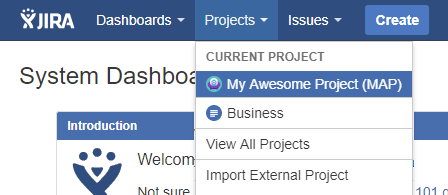
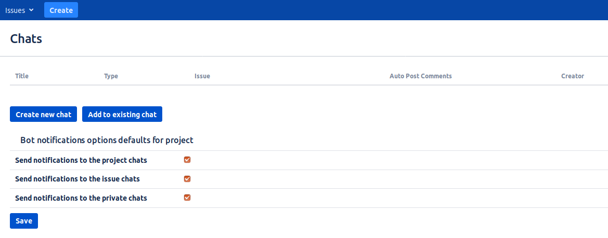
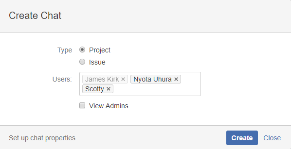
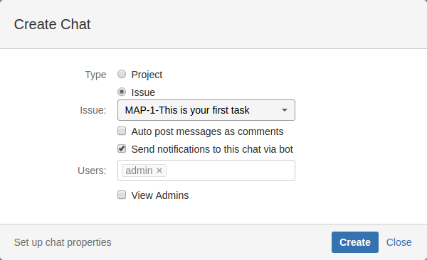
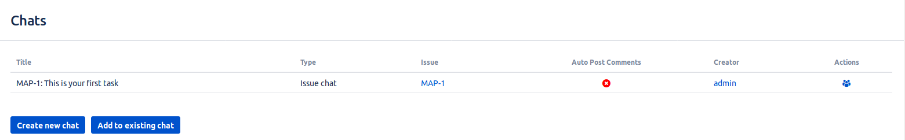
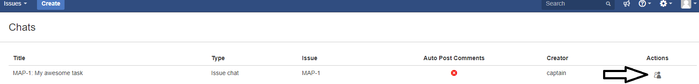
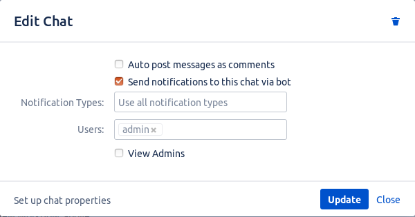

If you are logged in to your Telegram Integration, let's create chats!:
Open one of your projects you want to start with.

You'll see a new tab "Chats" in project section.

This section contains list of your chats for this project. Click the "Create new chat" button.

In this window you can choose, is this chat for all project, or only for specified issue.
You can have only one chat for each project, and one chat for each issue.
Choose type and add users to your chat. In the "Users" field your name is disabled because you are creator of
this chat,
you can't create a chat and not be its participant.
Note: If the user you added does not register in the Telegram Integration, he will be ignored.
If you choose issue chat, you'll see the option "Auto post messages as comments". Enabling this option means that every message from this chat will be posted in comments for this issue. 

Created chat appears in chat table. Now check your Telegram!
In created chat you can see members you added and telegram bot.
Do not delete bot from chat! It post comments in JIRA and manage chat participants.
If chat or specified task will be deleted from Jira, Bot leaves chat.
Editing the chat is identical to the features described in the chat creation section.
Click on the icon to edit a chat.

In this window you can edit chat members and admins.
If you don't need this chat anymore, you can delete it by clicking on
button.

Note: If you delete this chat, it will be not available in Jira but it still stays in Telegram app.
Logged in chat users also can view this window but they can't edit anything